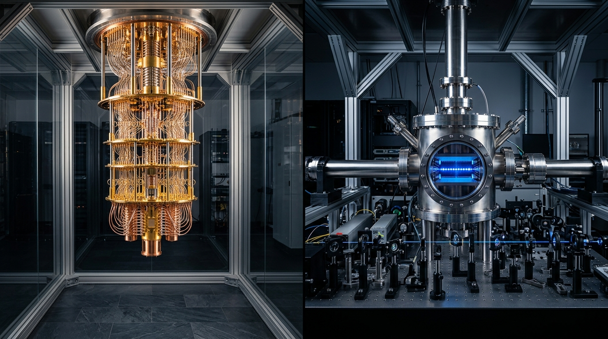
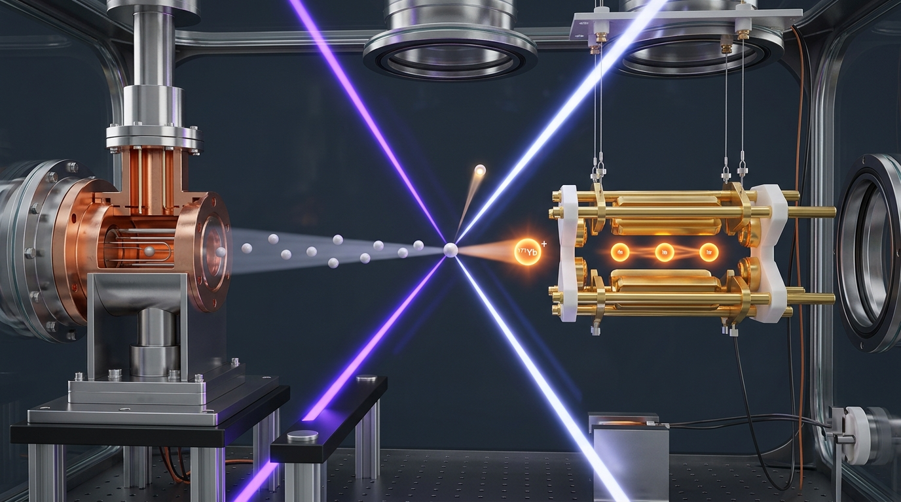
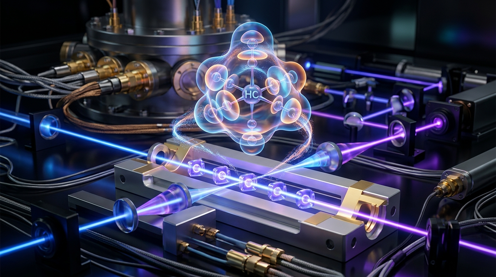
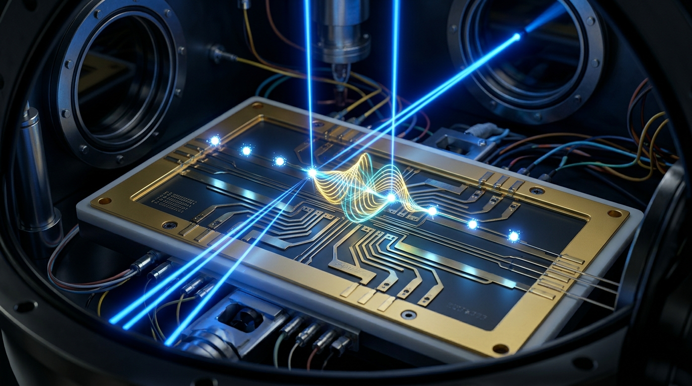

양자 컴퓨터의 '두뇌'는 무엇으로 만드는가?
반도체 실리콘 칩(0과 1) vs 자연이 만든 완벽한 원자(중첩과 얽힘)
우리가 매일 사용하는 스마트폰과 노트북 속 CPU는 실리콘(규소, Si) 기판 위에 수십억 개의 미세한 스위치(트랜지스터)를 만들어 둡니다. 전기가 통하면 1, 통하지 않으면 0이라는 디지털 2진수로 세상의 모든 계산을 처리합니다.
하지만 양자 컴퓨터(Quantum Computer)는 완전히 다릅니다. 인위적으로 만든 트랜지스터 스위치를 쓰는 것이 아니라, 물질의 가장 깊숙한 기본 단위인 '원자' 그 자체의 양자역학적 상태를 정보의 기본 단위인 큐비트(Qubit, Quantum Bit)로 사용합니다.
초전도 큐비트 (Superconducting)
- 재료: 실리콘 기판 위에 알루미늄/니오븀 초전도 금속 박막 회로 제작
- 원리: 극저온에서 저항이 0이 되는 초전도 전류의 회전 방향(시계/반시계)으로 0과 1을 정의
- 장점: 회로 연산 속도(나노초 단위)가 매우 빠르고 반도체 공정 활용 가능
- 약점: 인간이 깎아 만든 금속이라 큐비트마다 미세한 오차가 존재하며, 영하 273.14℃(15 mK)를 유지하는 거대한 '황금빛 샹들리에(희석 냉동기)'가 반드시 필요함
이온 트랩 큐비트 (Trapped Ion)
- 재료: 희토류 원소인 이테르븀(Yb, 원자번호 70) 또는 알칼리 토금속인 칼슘(Ca), 바륨(Ba)
- 원리: 전자 하나를 떼어낸 순수 양이온(Yb⁺)의 최외각 전자 스핀 궤도 에너지 준위 사용
- 장점: 지구에서 잡든 안드로메다 은하에서 잡든 우주에 존재하는 모든 이테르븀 원자는 100.000% 완벽히 동일함 (품질 편차 0, 긴 결맞음 시간)
- 상태 유지: 극저온 냉동기가 필요 없으며, 실온(Room Temp)의 진공 챔버 안에서 전자기장으로 공중에 띄워 유지함!

초전도 방식이 "인간이 정밀 기계로 나노미터 크기의 똑같은 모래시계를 수백 개 깎아 맞추려 애쓰는 기술"이라면, 이온 트랩 방식은 "신(자연)이 이미 100억 년 전에 완벽하게 오차 0으로 만들어둔 똑같은 물방울(원자)을 공중에 띄워 쓰는 기술"입니다.
가열된 원자에서 이온을 낚아채는 마법
"금속 덩어리를 400℃로 가열하는데 어떻게 허공에 딱 멈춰 세울까?"
"고체 금속을 가열하면 기체가 되어 사방으로 미친 듯이 날아갈 텐데, 대체 무슨 수로 원자를 하나하나 골라내어 공중에 가둘 수 있나요?" 이것은 물리학자들도 수십 년간 머리를 싸매며 연구했던 노벨 물리학상(1989년 볼프강 파울)의 위대한 발명입니다.
1단계: 원자 오븐(Atomic Oven)에서 원자 빔 분출
손가락 한 마디 크기의 가느다란 스테인리스 스틸 튜브 안에 고체 이테르븀(Yb-171) 금속 조각을 넣고 전류를 흘려 약 400℃ ~ 500℃로 달굽니다. 챔버 내부는 공기 분자가 전혀 없는 초고진공(UHV, 10⁻¹¹ Torr: 달 표면보다 100배 깨끗한 진공) 상태이므로, 기화된 이테르븀 중성 원자들은 공기 저항 없이 미세한 노즐을 통해 한 줄기 총알(초속 수백 미터)처럼 발사됩니다.
2단계: 2단계 공명 레이저 저격 (Two-Step Photo-Ionization)
날아가는 중성 원자 중에서 우리가 원하는 '이테르븀-171' 동위원소만 딱 집어서 전자를 떼어내야 합니다!
• 399 nm 보랏빛 레이저: 오직 이테르븀-171 원자의 최외각 전자만 반응할 수 있는 초정밀 파장을 쏴서 전자를 바깥 궤도(¹P₁)로 들뜨게 만듭니다.
• 369 nm / 394 nm 자외선 레이저: 들뜬 전자에 추가 에너지를 공급해 원자 밖으로 완전히 튕겨내 버립니다!
순식간에 중성 원자는 순수한 양이온(¹⁷¹Yb⁺)으로 변신하며 강력한 전기적 성질(+)을 띠게 됩니다.
3단계: 폴 트랩(Paul Trap) - '회전하는 말안장'의 마법
전자기학의 대원칙인 언쇼의 정리(Earnshaw's Theorem)에 따르면, 고정된 자석이나 고정된 전기장(DC)만으로는 전하를 3차원 허공에 가둘 수 없습니다(반드시 어느 한쪽 방향으로는 미끄러져 튕겨 나갑니다).
물리학자 볼프강 파울은 "말안장을 모터로 빠르게 빙글빙글 돌리는 아이디어"를 고안했습니다!
말안장 한가운데에 쇠구슬을 가만히 올려두면 좌우로 미끄러져 땅에 떨어집니다. 하지만 말안장을 초당 수십 바퀴씩 모터로 아주 빠르게 회전시키면 어떻게 될까요?
구슬이 아래로 떨어지려는 찰나에 안장의 솟아오른 면이 구슬을 위로 쳐올리고, 다시 반대편으로 떨어지려는 순간 또 반대쪽이 쳐올립니다! 구슬은 떨어질 틈을 찾지 못하고 마치 보이지 않는 그릇에 담긴 것처럼 말안장 회전축 정중앙에 둥둥 떠 있게 됩니다.
이온 트랩에서는 4개의 전극에 초당 수천만 번(수십 MHz) 극성이 바뀌는 라디오파(RF 고주파 전압)를 걸어 이온을 허공에 가둡니다!

1열 종대와 쿨롱 결정(Coulomb Crystal)
"양이온끼리는 서로 밀어낼 텐데, 어떻게 완벽한 일렬로 줄을 설까?"
양이온(+ 전하) 여러 개를 한 공간에 가두면 당연히 쿨롱 척력(서로 밀어내는 힘) 때문에 사방으로 흩어지려 합니다. 게다가 처음 가열되어 오븐에서 튀어나온 이온은 온도가 수백 ℃에 달해 엄청난 속도로 요동치고 있습니다. 이 문제를 해결하는 두 가지 물리적 기술이 바로 도플러 레이저 냉각과 선형 폴 트랩의 기하학적 구속입니다.
도플러 레이저 냉각 (Doppler Laser Cooling) - 브레이크 밟기
빛(광자)도 질량과 운동량을 가지고 있습니다. 날뛰는 이온을 향해 369.5 nm 레이저를 마주 비춰줍니다.
도플러 효과: 이온이 레이저를 향해 달려올 때만 빛의 파장이 압축되어 공명 흡수가 일어나며 광자의 반대 방향 충격을 받습니다(브레이크!). 반대로 레이저와 같은 방향으로 달아날 때는 빛을 흡수하지 않습니다.
수만 번의 브레이크를 연속으로 밟으면서, 이온의 온도는 불과 0.01초 만에 절대영도 직전인 0.0001 K(수백 마이크로켈빈)으로 얼어붙습니다!
쿨롱 결정(Coulomb Crystal)의 형성 - 스프링 구슬 줄다리기
열운동 에너지를 완전히 빼앗긴 차가운 이온들은 이제 전자기장의 형태에 지배당합니다.
선형 폴 트랩은 x축과 y축(좌우/상하)으로는 매우 강력하게 조여 매고, z축(길이 방향)으로는 느슨하게 전기장을 만듭니다.
좌우로는 탈출할 수 없으니 이온들은 z축을 따라 일렬로 정렬할 수밖에 없으며,
"외부 전극이 양쪽 끝에서 밀어 넣는 힘" vs "이온들끼리 서로 밀어내는 쿨롱 반발력"이 완벽한 평형을 이루며 약 5 마이크로미터(μm) 간격으로 완벽한 1열 종대 기차를 만듭니다!


레이저로 계산을 수행하는 원리
"공중에 매달린 원자에 레이저를 쏘는데 어떻게 수학과 화학 문제가 풀릴까?"
원자가 공중에 줄을 서 있는 것만으로는 계산이 되지 않습니다. 이제 이 원자들을 '양자 스위치'로 조작해야 합니다. 이테르븀 이온(¹⁷¹Yb⁺)의 중심에는 원자핵이 있고, 그 주위를 단 1개의 최외각 전자가 돌고 있습니다.
바닥 상태 (F=0, m_F=0)
전자의 스핀 자기모멘트와 원자핵의 스핀이 서로 반대 방향으로 결합된 가장 안정한 에너지 상태. 디지털 신호 0에 해당합니다.
들뜬 상태 (F=1, m_F=0)
스핀이 나란히 정렬되어 바닥 상태보다 정확히 12.642812 GHz(마이크로웨이브 영역) 만큼 높은 에너지를 가진 상태. 디지털 신호 1에 해당합니다.
1-큐비트 게이트: 나노초 레이저 펄스로 중첩(Superposition) 만들기
두 에너지 준위 차이에 정확히 일치하는 355 nm 펄스 레이저를 이온에 쏩니다.
• π (파이) 펄스: 정해진 시간 동안 레이저를 비추면 |0⟩ 상태가 100% 확률로 |1⟩로 뒤집힙니다 (비트 반전, NOT 게이트).
• π/2 펄스: 딱 절반 시간 동안만 레이저를 쪼이면 전자는 |0⟩과 |1⟩의 중간인 50% 확률로 0이면서 동시에 50% 확률로 1인 '중첩 상태'에 놓이게 됩니다 (아다마르, H 게이트)!
2-큐비트 얽힘 게이트: 이온들의 '공동 진동(포논)'으로 대화하기
양자 컴퓨터의 진정한 초능력은 큐비트끼리 운명을 공유하는 양자 얽힘(Quantum Entanglement)에서 나옵니다.
그런데 멀리 5μm나 떨어져 있는 두 원자가 어떻게 서로 소통할까요?
스프링 비유: 1열로 늘어선 양이온들은 서로 양전하(+)로 밀어내고 있기 때문에, 마치 보이지 않는 용수철로 연결된 쇠구슬들과 같습니다.
1번 이온을 레이저로 툭 치면 그 진동(양자 포논, Phonon)이 용수철을 타고 전체 이온으로 전달됩니다!
뫼르머-쇠렌센(Mølmer-Sørensen) 게이트: 이 진동을 매개체로 삼아 두 원자의 전자 스핀을 동시에 뒤흔들면, 한쪽 원자의 상태가 바뀌면 다른 쪽 원자도 즉각 반응하는 완벽한 얽힘 상태가 완성됩니다!
결과 측정: 빛이 나면 1, 캄캄하면 0! (형광 검출법)
계산이 끝났으면 원자 속에 들어있는 답을 디지털 컴퓨터로 읽어와야 합니다.
이온 전체에 369.5 nm 검출 레이저를 쏩니다.
• |1⟩ 상태의 이온: 레이저 빛을 맹렬히 흡수하고 뿜어내며 찬란한 푸른빛(형광 광자)을 방출합니다!
• |0⟩ 상태의 이온: 에너지 준위가 맞지 않아 레이저 빛을 전혀 흡수하지 못하고 완전한 암흑으로 남습니다.
초고감도 EMCCD 카메라가 이 빛을 촬영하여 "빛남 = 1, 어두움 = 0"의 디지털 비트 배열(예: 1011001...)로 즉시 변환합니다!

파이썬(Python)과 양자의 하이브리드 연동
"내가 짠 파이썬 코드가 어떻게 양자 하드웨어를 움직여 화학 문제를 풀까?"
이제 가장 흥미로운 부분입니다! 여러분이 학교 컴퓨터실에서 작성한 파이썬(Python) 코드가 어떤 다리를 건너 실제 실험실 진공 챔버 속 원자들을 지휘하고, KAIST 화학과 CPRL 연구실의 알고리즘을 거쳐 최첨단 분자 에너지를 계산해내는지 5단계 파이프라인으로 확인해 봅시다.
# 1. 고교생이 작성하는 파이썬 양자 화학 계산 코드 예시
from qiskit import QuantumCircuit
from qiskit_braket_provider import BraketProvider
# 수소 분자(H2)의 전자 구조를 위한 2-큐비트 앙상블 회로 생성
qc = QuantumCircuit(2)
qc.h(0) # 0번 큐비트에 아다마르(H) 게이트 적용 (중첩)
qc.cx(0, 1) # 0번과 1번 큐비트 CNOT 얽힘 게이트 적용
qc.rz(theta, 1) # 분자 결합 길이에 따른 양자 위상 회전
qc.measure_all() # 광자 형광 측정 명령
# 2. 클라우드를 통해 실제 이온트랩(IonQ) 양자 컴퓨터로 전송
backend = provider.get_backend('IonQ Aria')
job = backend.run(qc, shots=1000)
result = job.result()
print("측정된 전자 구름 확률 분포:", result.get_counts())[클라이언트] 파이썬 회로 생성 및 QASM 변환
파이썬 라이브러리(Qiskit)는 우리가 작성한 게이트 명령을 양자 어셈블리어인 OpenQASM 3.0(텍스트 명령어)으로 번역하고 JSON 패킷으로 묶어 클라우드 API로 발송합니다.
[서버 랙] 리눅스 마스터 컨트롤러 & 펄스 컴파일러
양자 컴퓨터 옆 19인치 서버 랙의 리눅스(Linux) 시스템이 이 명령어를 받습니다.
리눅스 내의 컴파일러는 QASM 명령어(예: cx q[0], q[1])를 물리적인 "AOM 고주파 전압 제어 펄스 파형(타이밍, 세기, 주파수, 위상)"으로 변환하여 초정밀 하드웨어 제어 보드(FPGA)로 보냅니다.
[챔버 내부] 레이저 저격 및 광자 카운팅
FPGA가 나노초 단위로 레이저 셔터를 열고 닫으며 이온들에게 펄스를 쏘고, EMCCD 카메라가 1000번 반복 측정한 밝기(형광) 데이터를 수집하여 0과 1의 통계 확률로 환산합니다.
[KAIST CPRL의 핵심 혁신] oo-upCCD-PT2 고전-양자 하이브리드 보정
현재 양자 컴퓨터(NISQ)는 완벽하지 않아 약간의 레이저 노이즈가 발생합니다.
KAIST 화학과 이영민 교수 연구실(npj Quantum Information, 2024)은 기막힌 융합 알고리즘을 개발했습니다!
1) 양자 컴퓨터: 전자가 강하게 얽혀 고전 컴퓨터가 풀지 못하는 핵심 궤도(upCCD)만 빠르게 계산.
2) 고전 슈퍼컴퓨터(리눅스 클러스터): 섭동 이론(PT2)과 오비탈 최적화(oo)를 실시간으로 적용해 양자 컴퓨터의 노이즈와 나머지 오차를 수학적으로 깔끔하게 제거!
결과: 순수 양자 하드웨어 단독 계산 대비 화학 반응 에너지 오차를 90% 이상 대폭 줄여 실제 실험값에 완벽히 일치하는 분자 퍼텐셜 에너지 곡선(PES)을 얻어냈습니다!


고등학생이 가장 많이 묻는 결정적 질문 TOP 4
물리와 화학 시험에 나오는 개념과 양자 컴퓨터의 연결고리
이테르븀이나 칼슘은 최외각 전자가 2개 있는 금속입니다. 여기서 전자 1개를 떼어내면(단일 양이온), 수소 원자처럼 단 1개의 전자만 남은 가장 단순하고 깔끔한 전자 껍질 구조가 됩니다. 반면 탄소나 산소는 전자를 떼어내도 여러 개의 전자가 서로 복잡하게 상호작용하여 레이저로 깔끔하게 0과 1 준위를 조작하기가 극도로 어렵습니다. 또한 이테르븀-171은 핵스핀이 1/2이어서 지구 자기장의 미세한 노이즈에 영향을 받지 않는 '기적의 시계 전이 준위(Clock Transition)'를 제공합니다.
폴 트랩 전극이 만드는 전기장 우물의 깊이는 이온의 열운동 에너지보다 수천 배나 깊습니다. 즉, 이온 입장에서는 에베레스트 산맥으로 둘러싸인 깊은 분지에 갇혀 있는 셈입니다. 또한 챔버 내부 압력이 10⁻¹¹ Torr로 거의 완전한 무(無)의 상태이므로, 이온과 충돌해 이온을 튕겨낼 공기 분자조차 존재하지 않습니다. 그래서 한 번 포획된 이온은 수 시간에서 수일 동안 공중에 그대로 멈춰 있습니다.
일반 컴퓨터 비트 3개가 있으면
000, 001, ..., 111 중 단 1개의 상태만 표현할 수 있습니다.
하지만 큐비트 3개는 양자 중첩 덕분에 8개의 상태를 동시에 가질 수 있습니다. 큐비트가 50개만 되어도 2⁵⁰(약 1125조) 개의 숫자를 단 한 번의 레이저 펄스로 동시에 처리할 수 있어, 슈퍼컴퓨터로 수만 년 걸릴 화학 분자 상호작용을 단 몇 초 만에 시뮬레이션할 수 있습니다.
양자 컴퓨터는 얽힘이나 미시세계 전자 구름 계산에는 천재적이지만, 단순 덧셈·뺄셈, 파일 저장, 조건문 분기 같은 작업은 일반 컴퓨터가 수억 배 빠르고 정확합니다. 따라서 "양자 컴퓨터는 가장 난해한 핵심 양자 매듭만 풀고, 나머지 정리와 오차 보정은 일반 고성능 리눅스 컴퓨터가 맡는 하이브리드(VQE) 방식"이 현재 인류가 양자 컴퓨터를 가장 실용적으로 활용하는 표준 방식(KAIST CPRL 연구의 핵심)입니다.